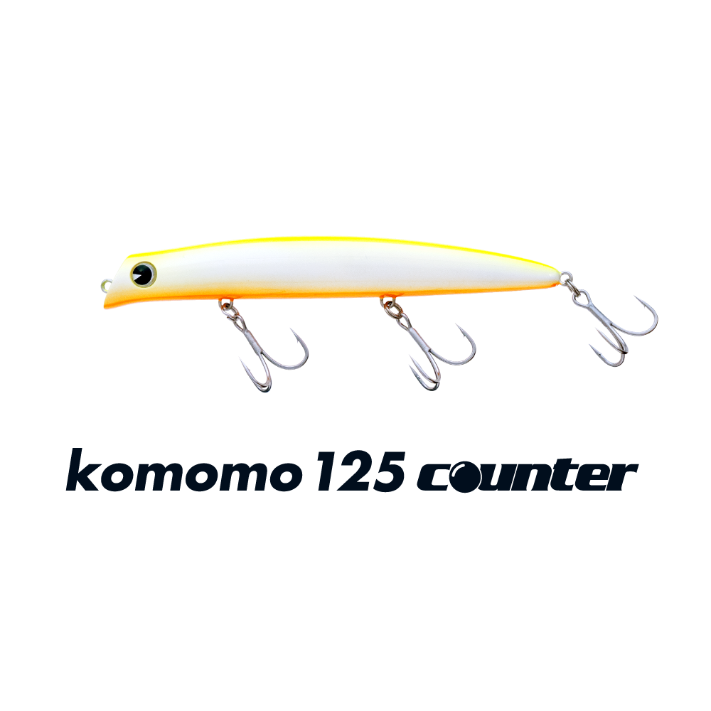
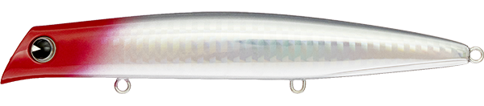
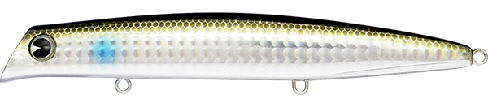
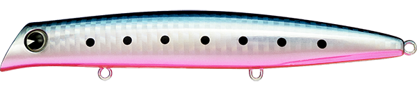
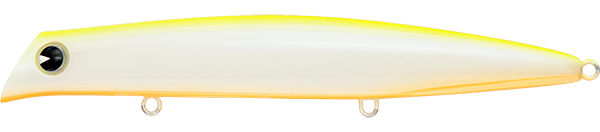
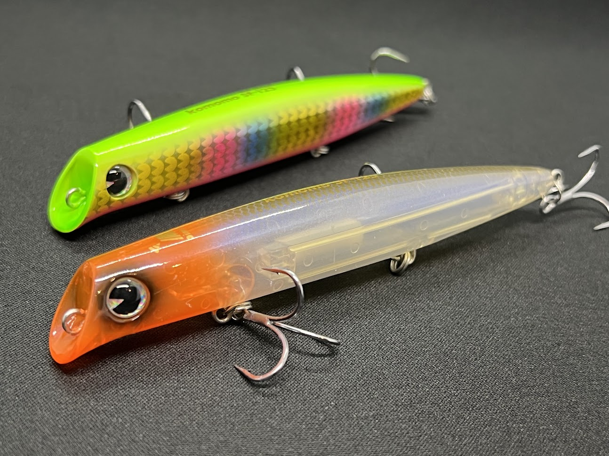
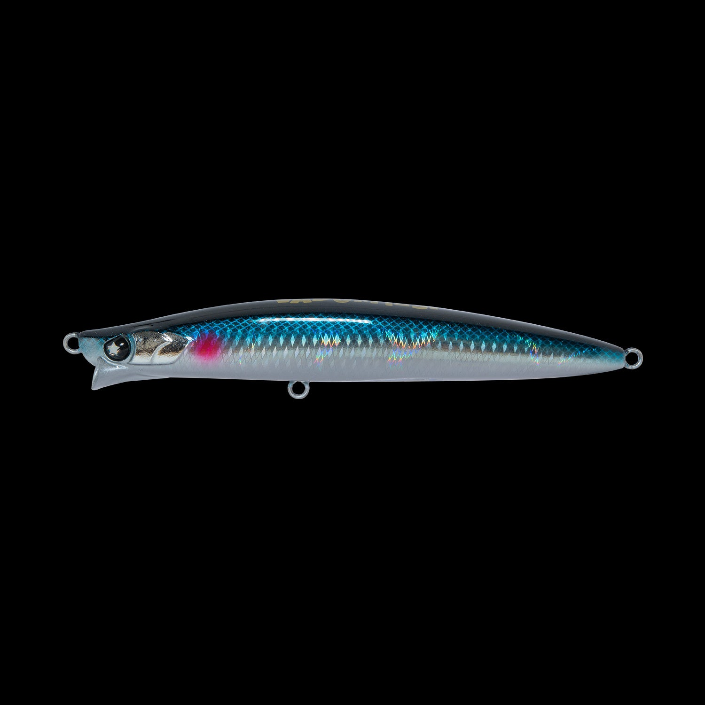

コモモ125カウンター
（komomo 125 counter）
コモモ125カウンター（komomo 125 counter）はima（アイマ）のシャローランナーです。
シーバスのシャローランナーの代表格「コモモSF-125」のカウンターモデルで、シャロー性能や飛距離性能はそのままに、アクションを少し抑えてなめらかにしたのが特徴。コモモSF-125より一枚下のレンジを、よりナチュラルに見せたいときの1本です。

画像出典:ima公式HP
スペック
- メーカー
- ima（アイマ）
- タイプ
- 海水サスペンド
- 全長
- 125mm
- 自重
- 22g
- レンジ
- 30〜60cm
- フック
- #4
- リング
- #3
- アクション
- ウォブンロール
- ターゲット
- シーバス
- 価格
- 2,640円（税込）
- 発売
- 2011年
▼今すぐチェック
コモモ125カウンターの特徴
「投げて巻くだけ」で、名作コモモの一枚下をナチュラルに攻めるカウンターモデル
-
コモモSF-125の基本性能をそのまま継承
シャロー性能や飛距離性能など、シャローランナーの定番として長く使われてきたコモモSF-125の基本性能をそのまま受け継いでいる。干潟・河口・河川・サーフと、使えるフィールドも同じく幅広い。
-
なめらかに抑えたアクションでナチュラルに見せる
オリジナルモデルより少し抑えたなめらかなウォブンロールで、スレた魚や澄み潮でも違和感を与えにくい。SF-125で反応が無くなった後の「もう一手」として投入しやすい。
-
海水サスペンドで一枚下のレンジをキープ
海水でサスペンドする設定で、レンジは30〜60cm。SF-125より一枚下のレンジを、止めても浮き上がりにくい状態で引けるため、表層に魚が出きらない場面にも対応できる。
コモモ125カウンターの使い方
基本はスロー〜ミディアムのただ巻き。メーカーの言う通り「投げて巻くだけ」で、抑えめのウォブンロールが自然に出る。
サスペンド設定を活かして、明暗の境目やヨレに差し掛かったところで巻きを止め、ポーズを入れてから再び巻き始めるストップ＆ゴーも有効。流れのある場所ではドリフト気味に流しながらレンジをキープし、一定のコースを丁寧に通すのが組み立ての基本です。
コモモ125カウンターの得意な状況
干潟・河口・河川・サーフなど、シャローエリア全般が出番。
特に、コモモSF-125や他のシャローランナーで反応が途絶えたスレた状況や、表層より少し下に魚が付いている状況で強い。澄み潮・日中など、ナチュラルに見せたい場面で選びたい1本です。
ワンポイント
まずコモモSF-125で表層を探り、反応が無ければ同じコースをカウンターで一枚下を通す、という「ローテーションの2本目」として使うと出番がはっきりします。
冷え込みで魚が浮き切らないシーズンにも、レンジを一段下げられるカウンターの強みが活きます。
コモモSF-125とカウンターの使い分け
| モデル | 全長／自重 | 得意な場面 |
|---|---|---|
| コモモSF-125 | 125mm／18g | 水面直下〜50cm前後のシャロー。まず投げる1軍のサーチベイト |
| コモモ125カウンター | 125mm／22g | SF-125の一枚下をナチュラルに。スレた魚や澄み潮に（本記事のモデル） |
どちらも同じ125mmのシャローランナー。アピールとレンジの高さを優先するならSF-125、レンジを一段下げてナチュラルに見せたいならカウンターと、状況で持ち替えるのがオススメです。SF-125の詳細はコモモSF-125の記事で紹介しています。
人気カラー
コモモ125カウンターは全12色展開。シャローのシーバス狙いでオススメのカラーを厳選して紹介します。

レッドヘッド定番中の定番。濁りやナイトゲームでもシルエットを出しやすい。

ボラシャローに多いボラ（イナッコ）パターンに合わせやすいナチュラル系。

マコイワシイワシ系のベイトに合わせたナチュラルカラー。澄み潮やデイゲームに。

チャートバックパールチャートの背中とパールの高視認カラー。マズメや濁り潮のアピールに。
画像出典:ima公式HP
コモモ125カウンターに似ているルアー
-

コモモSF-125 ima 詳細はこちら＞同じimaのオリジナルモデル。全長125mmのシャローランナーで、カウンターより一枚上の表層付近を探るのが得意。まずSF-125で広く探り、反応が無ければカウンターで一枚下を通すローテーションが組みやすい。
-

VADUM125F（ヴァダム125F） レガーレ 詳細はこちら＞全長125mm・自重21gのフローティングミノー。アピールを抑えたロール主体の”静”のアクションでスレた魚に喰わせるコンセプトで、コモモ125カウンターと同じく「ナチュラルに見せたい」場面の選択肢になる。
-
 ショアラインシャイナーZ バーティスR 125F-SSR
ダイワ
詳細はこちら＞
ショアラインシャイナーZ バーティスR 125F-SSR
ダイワ
詳細はこちら＞
全長125mm・自重20.3gのスーパーシャローランナー。有効レンジ約30〜50cmとレンジ帯が近く、ヌルヌルとしたロールアクションで表層付近をおとなしく引ける。飛距離を優先したいときの持ち替えに。